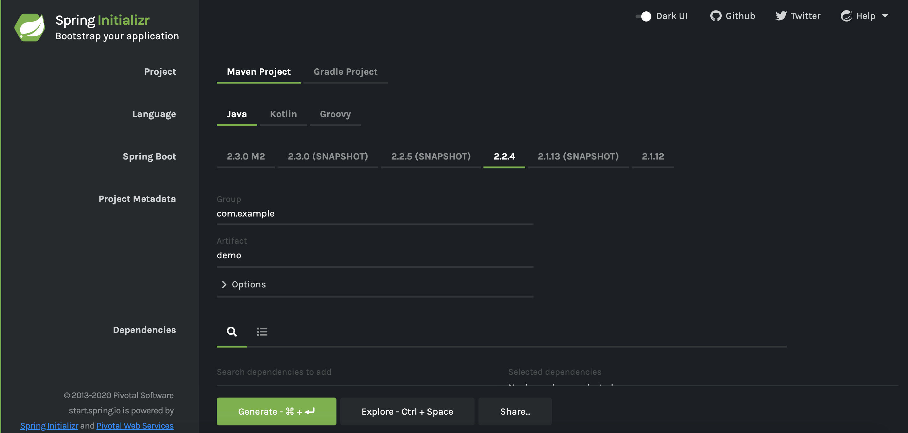
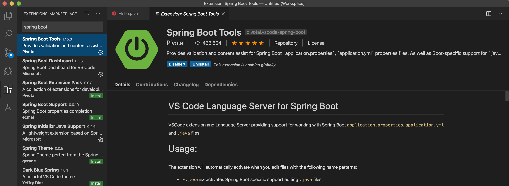
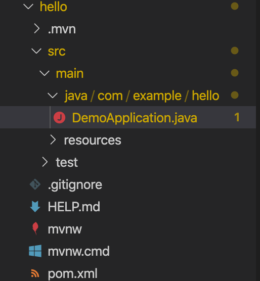
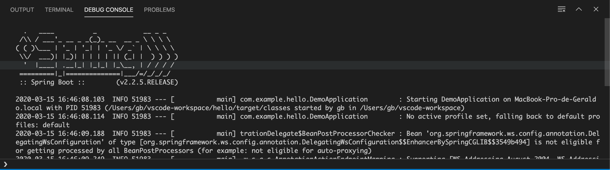

name: inverse class: center, middle, main-title # Introdução ao Spring Boot Laboratório de Programação --- # O que é? > Spring Boot makes it easy to create stand-alone, production-grade Spring based Applications that you can "just run". - Principais Características - Cria aplicações Spring stand-alone - Sem WAR! possui integrado um container (Tomcat, Jetty) - Disponibiliza kits 'starter', que simplificam a configuração - Configurações automáticas (sempre que possível) - Fornece recursos prontos para produção, como métricas, verificações de integridade e configuração externa - Absolutamente nenhuma geração de código e nenhum requisito para configuração XML --- #Origem - Vem do framework `Spring` - Um dos projetos Spring - Alguns projetos Spring: - Spring Framework - core básico - Spring Boot - aplicações aceleradas - Spring Data - manipulação com base de dados - Spring Security - disponibiliza mecanismos de autenticação e autorização - Spring Cloud - Cloud e padrões em sistemas distribuidos - e muito mais! --- # Importância > All these make Spring boot, something that enables developers focus on business logic of the application and not on setting up the project or usage of complex frameworks --- class: center, middle, main-title # Por onde começar? Alguns pontos iniciais --- ## Spring Boot Initializr - Comece do zero ou use uma ferramenta para criar o projeto e definir as dependências? - Configurar rapidamente um projeto ([https://start.spring.io/](https://start.spring.io/))  --- ## Spring Boot: Starters - Os Starters contêm as dependências necessárias, incluindo todas as dependências consistentes e suportadas: - Aumentar a capacidade de gerenciamento de dependências - Pronto para produção, testado - Diminui o tempo total para realizar as configurações - Facilidade para atualização - Principais Starters - Spring starter Web - Spring Starter Security - Spring Starter Data JPA - Spring Starter Data Rest - Spring Starter Actuator - Spring Starter Logging --- ## Spring Boot: Auto-Configuration - Spring Boot auto-configuration automaticamente configura sua aplicação Spring baseado nas dependências que você adicionou \o/ - É claro que, se precisar, você pode modificar ou incluir suas próprias configurações - > Não tem controle sobre o desenvolvimento de aplicativos. Apenas fornece ajuda para o desenvolvimento rápido. Existem várias maneiras de substituir as configurações padrão. --- ## Spring Boot: Servidores embutidos - Por padrão, Spring Boot cria um .jar executável com um servidor embutido - A configuração do servidor por ser alterada pela propriedades da aplicação: - Porta - Contexto - Conectores - Por padrão, incluir `Tomcat`. Mas é possível usar `Jetty` ou `Undertow` - Se necessário, você pode criar um war e rodar a aplicação num outro servidor --- class: center, middle, main-title # Ok, nosso Hello World no Spring... <br /> <br /> Ou seria, hello REST? --- #Requisitos do sistema - Para fazer projetos Spring Boot é necessário: - Java 8+ - Spring Boot (claro) - Spring Framewotk - Maven ou Gradle - Tomcat 9+, Jetty, Undertow - Fazendo na mão, pode criar o projeto usando a `spring-cli` --- #Nosso primeiro exemplo - O `VS Code` fornece todas as dependências - Vamos usar o `VS Code` como IDE - Você precisará instalar o pacote do Spring Boot - Entre no Marketplace - Procure por `Spring Boot Initializr`, `Spring Boot Tools` e `Spring Boot Dashboard`. Instale elas <center>  </center> --- ## Criando um projeto Spring Boot - Vá na interface de criar projeto: View -> Command Palete - Procure por `Spring Initializr: Generate Maven Project` - Responda às perguntas: - Java - GroupId: com.example - Nome: hello - Versão: 2.2.5 - Dependências: Spring Web, Web Services, Jersey (só isso) --- ## Seu projeto está criado! - Aproveite para dar uma olhada na estrutura: <center>  </center> --- ## Seu projeto está criado! - Aproveite para dar uma olhada na estrutura: - src: seus fontes - resources: configurações - test: classes de teste - Maven dependecies: libs associadas ao projeto - pom.xml: arquivo de configuração do Mavem --- ### pom.xml ```xml <?xml version="1.0" encoding="UTF-8"?> <project xmlns="http://maven.apache.org/POM/4.0.0" xmlns:xsi="http://www.w3.org/2001/XMLSchema-instance" xsi:schemaLocation="http://maven.apache.org/POM/4.0.0 https://maven.apache.org/xsd/maven-4.0.0.xsd"> <modelVersion>4.0.0</modelVersion> <parent> <groupId>org.springframework.boot</groupId> <artifactId>spring-boot-starter-parent</artifactId> <version>2.2.4.RELEASE</version> <relativePath/> <!-- lookup parent from repository --> </parent> <groupId>com.example</groupId> <artifactId>OiMundo</artifactId> <version>0.0.1-SNAPSHOT</version> <name>OiMundo</name> <description>Projeto Oi Mundo</description> <properties> <java.version>1.8</java.version> </properties> <dependencies> <dependency> <groupId>org.springframework.boot</groupId> <artifactId>spring-boot-starter-jersey</artifactId> </dependency> <dependency> <groupId>org.springframework.boot</groupId> <artifactId>spring-boot-starter-web</artifactId> </dependency> <dependency> <groupId>org.springframework.boot</groupId> <artifactId>spring-boot-starter-web-services</artifactId> </dependency> <dependency> <groupId>org.springframework.boot</groupId> <artifactId>spring-boot-starter-test</artifactId> <scope>test</scope> <exclusions> <exclusion> <groupId>org.junit.vintage</groupId> <artifactId>junit-vintage-engine</artifactId> </exclusion> </exclusions> </dependency> </dependencies> <build> <plugins> <plugin> <groupId>org.springframework.boot</groupId> <artifactId>spring-boot-maven-plugin</artifactId> </plugin> </plugins> </build> </project> ``` --- ##A aplicação: DemoApplication.java ```java package com.example.hello; import org.springframework.boot.SpringApplication; import org.springframework.boot.autoconfigure.SpringBootApplication; @SpringBootApplication public class DemoApplication { public static void main(String[] args) { SpringApplication.run(DemoApplication.class, args); } } ``` --- ## Spring Boot: Annotations | Annotation | Descrição | |--|--| | @SpringBootApplication | Marca a classe principal do aplicativo. Encapsula as seguintes anotações. <br /> @EnableAutoConfiguration, @Configuration e @ComponentScan<br /> | ###Quais seriam as outras? --- | Annotation | Descrição | |--|--| | @EnableAutoConfiguration | Permite que a inicialização do Spring procure por beans de configuração automática em seu caminho de classe. <br /> Mais comumente usado com o atributo de exclusão que esta anotação possui. | | @Configuration | A anotação Spring Configuration indica que a classe possui métodos de definição @Bean. O Spring deve instanciar esses beans e usá-los na injeção de dependência.<br /> | | @ComponentScan | Ativa a verificação de componentes. O Spring procurará classes anotadas<br /> | --- | Annotation | Description | |--|--| | @Conditional | Todas as anotações abaixo derivam desta. Ele pode ser usado para criar condições personalizadas. <br /> Podemos colocar as anotações nesta seção nos métodos *@Configuration* classes ou *@Bean* e indicar que somente quando a condição for atendida, o bean ou a classe de configuração será usava.<br /> | | @ConditionalOnClass <br/>@ConditionalOnMissingClass<br /> | Condições referentes à existência ou não de uma classe no caminho da classe | | @ConditionalOnBean @ConditionalOnMissingBean<br /> | Condições referentes à existência ou não de um Bean | | @ConditionalOnProperty<br /> | Condições referentes à existência ou não de uma propriedade | | @ConditionalOnResource<br /> | Condições referentes à existência ou não de um recurso no caminho de classe, ou seja, arquivo | | @ConditionalExpression<br /> | Condições usando expressões SpeL | --- ##Ok, vamos Hello <==> Oi - Crie uma nova classe, quem sabe `Hello` (new->class) - Crie um método: porque não `hello` - ele poderia retornar "Oi Mundo!" ```java package com.example.hello; public class Hello { public String hello() { return "Oi Mundo"; } } ``` --- ##Ok, vamos Hello <==> Oi - Para que possa ser chamado pelo URL, adicionamos a anotação `@RequestMapping("/hello")` ```java package com.example.api; import org.springframework.web.bind.annotation.RequestMapping; public class Hello { @RequestMapping("/hello") public String hello() { return "Oi Mundo"; } } ``` --- ##Ok, vamos Hello <==> Oi - E para o Spring Boot entender que é um método Rest, adicionamos `@RestController` ```java package com.example.api; import org.springframework.web.bind.annotation.RequestMapping; import org.springframework.web.bind.annotation.RestController; @RestController public class Hello { @RequestMapping("/hello") public String hello() { return "Oi Mundo"; } } ``` --- ##Agora que tá tudo pronto, vamos rodar - Clique com o botão direito sobre o projeto, depois `Run` <center>  </center> --- ##Agora que tá tudo pronto, vamos rodar - Entre no `browser` e digite o endereço: `localhost:8080/hello` --- ### Anotações Comuns: REST | Anotações de Controlador | Descrição | |--|--| | @Controller | Anotação Spring denotando que esta classe serve interface web | | @RestController | Introduzido no Spring 4.0 para simplificar a criação de serviços web RESTful. É uma anotação de conveniência que combina @Controller e @ResponseBody | | @RequestMapping | No nível do controlador / classe, denota o caminho original do controlador. No nível do método, denota o caminho, o que esse método consome ou produz junto com o tipo de método http. | | @ResponseBody | Serialização automática do objeto de retorno no HttpResponse | --- ### Anotações Comuns: REST | Anotações de Controlador | Descrição | |--|--| | @GetMapping | Anotação conveniente para RequestMapping com o método GET | | @PostMapping | Anotação conveniente para RequestMapping com o método POST | | @PutMapping | Anotação conveniente para RequestMapping com o método PUT | | @PathVariable | Indica parâmetro do método java passado via http path | | @RequestParam | Indica parâmetro do método java passado como query parameter | | @RequestBody | Indica uma propriedade do método java como corpo da solicitação | | @AutoWired | Injeção automática de dependências | --- #Um oi mundo com gente - E se eu quiser passar o meu nome para o serviço? - use `@PathVariable` ou `@RequestParam` ```java @GetMapping("/hello/{nome}") public String hello(@PathVariable("nome") String nome) { return "Oi Mundo, me chamo " + nome; } ``` - Para testar: http://localhost:8080/hello/geraldo --- #Um oi mundo com gente - E se eu quiser passar o meu nome para o serviço? - use `@PathVariable` ou `@RequestParam` ```java @GetMapping("/hello2") public String hello2(@RequestParam("nome") String nome) { return "Oi Mundo, me chamo " + nome; } ``` - Para testar: http://localhost:8080/hello2?nome=geraldo --- #Muita coisa diferente, hein? - HTTP - REST e RESTFull Ufa! > Não se desepere, vamos aprender todas! - Enquanto isso ... --- class: center, middle, main-title # Exercício Objetivo: avaliar como criar um projeto Spring boot, como rodar, entender algumas anotações, e brincar com métodos REST --- ## Descrição Implemente uma calculadora REST. Ele deve conter as seguintes funcionalidades entre dois números: - Somar - Subtrair - Multiplicar - Dividir - Potência